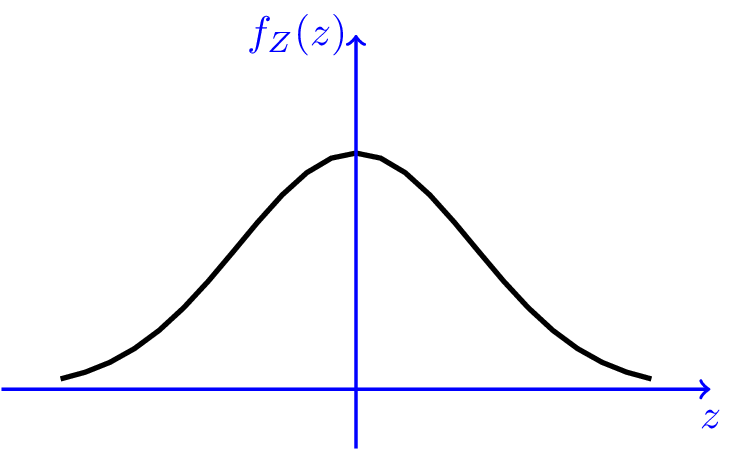
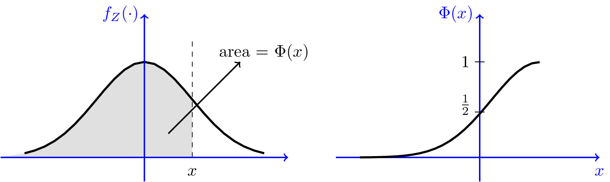
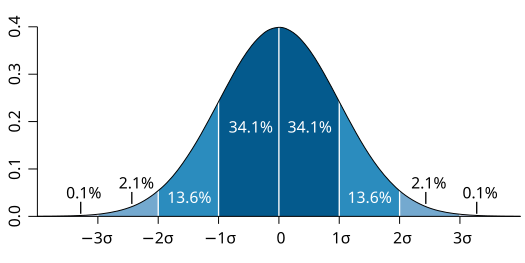
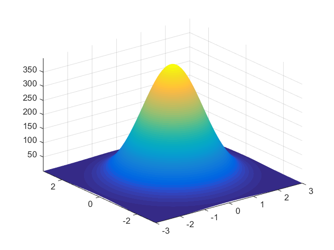
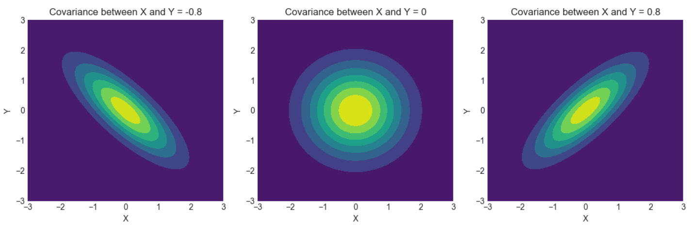

A Gaussian random variable (or Normal random variable) is a continuous random variable with a bell-shaped probability distribution. It is one of the most widely used distributions in probability and statistics due to the **Central Limit Theorem, which states that the sum of many independent random variables tends to follow a normal distribution, regardless of the original distributions of the variables. Therefore, a simple Gaussian assumption for a naturally occuring distribution often tends to provide accurate analysis of the system. We define and study both 1-d and 2-d Gaussian Random Variables in this experiment.
1D (Univariate) Gaussian Random Variable
1 Definition
A 1D Gaussian random variable X denoted as X∼N(μ,σ2), is characterized by two parameters:
Meanμ (center of the distribution)
Varianceσ2 (spread of the distribution)

Figure 1: Probability Density Function of a 1D Gaussian Random Variable
The probability density function (PDF) of X is given by:
fX(x)=2πσ21exp(−2σ2(x−μ)2)
2 Properties
Symmetry: The normal distribution is symmetric around its mean μ.
Standard Normal Distribution: When μ=0 and σ2=1, the Gaussian random variable is called a **standard normal variable, denoted by Z∼N(0,1). Its PDF is:
fZ(z)=2π1exp(−2z2)
Transformation of a Gaussian Random Variable:
If X∼N(μ,σ2), and we transform Y=aX+b, then Y∼N(aμ+b,a2σ2).
3 Cumulative Distribution Function (CDF)
The CDF of a standard normal variable is denoted by Φ(x), which is the probability that X≤x:
P(X≤x)=Φ(σx−μ)whereΦ(x)=2π1∫−∞xe2−t2⋅dt
However, there is no closed-form expression for Φ(x); it is generally computed numerically.
4 Properties of CDF
Here are some properties of the Φ function that can be shown from its definition.

Figure 2: Cumulative Distribution Function of a Standard Normal Variable
limx→∞Φ(x)=1,limx→−∞Φ(x)=0 ；
Φ(0)=21;
Φ(−x)=1−Φ(x), for all x∈R.
About 68% of values drawn from a normal distribution are within one standard deviation σ from the mean; about 95% of the values lie within two standard deviations; and about 99.7% are within three standard deviations. More precisely, the probability that a normal deviate lies in the range between
μ−nσ and μ+nσ is given by
F(μ+nσ)−F(μ−nσ)=Φ(n)−Φ(−n)=2Φ(n)−1

Figure 3: 68-95-99.7 Rule for Normal Distribution
Also, since the Φ function does not have a closed form, it is sometimes useful to use upper or lower bounds. In particular we can state the following bounds. For all x≥0,
2π1x2+1xexp{−2x2}≤1−Φ(x)≤2π1x1exp{−2x2}
5 Central Limit Theorem (CLT)
The CLT roughly states that the sum (or average) of a large number of independent and identically distributed (i.i.d.) random variables tends to be normally distributed, even if the original variables are not normal. We will discuss about CLT in detail in CLT Experiment
2D Gaussian Random Variable (Bivariate Normal Distribution)
1 Definition
A bivariate normal distribution describes two jointly normal random variables X and Y with the following parameters:
Means: μX, μY
Variances: σX2, σY2
Covariance: σXY=E[(X−μX)⋅(Y−μY)]
We denote this as:
(XY)∼N((μXμY),(σX2σXYσXYσY2))
2 Joint Probability Density Function (PDF)
The joint probability density function (PDF) of X and Y is given by:
ρ is the correlation coefficient between X and Y, given by ρ=σXσYσXY
Below is an example of how pdf 2D-Gaussian Random variable looks.

Figure 4: Probability Density Function of a 2D Gaussian Random Variable
3 Key Properties of the Bivariate Normal Distribution
Marginal Distributions:
The marginal distribution of X is X∼N(μX,σX2).
The marginal distribution of Y is Y∼N(μY,σY2).
This means that each random variable X and Y follows a normal distribution independently, but their joint behavior is governed by the covariance or correlation.
Independence:
If ρ=0, then X and Y are independent. In other words, zero correlation implies independence for jointly normal random variables.
Example:
Let X and Y be independent random variables with means 0 and standard deviations 1. This means ρ=0. Then the joint PDF simplifies to:
fX,Y(x,y)=2π1exp(−21[x2+y2])
This is simply the product of two univariate standard normal PDFs.
Conditional Distribution:
The conditional distribution of Y given X=x is normal, with the following parameters:
Mean: μY∣X=μY+ρσXσY(x−μX)
Variance: σY∣X2=(1−ρ2)σY2
Example:
Suppose X and Y are normally distributed with μX=2, μY=3, σX=1, σY=2, and ρ=0.5. If X=3, then the conditional distribution of Y given X=3 is:
Y∣X=3∼N(3+0.5×12(3−2),(1−0.52)×22)
Simplifying:
Y∣X=3∼N(4,3)
Therefore, Y given X=3 is normally distributed with a mean of 4 and variance of 3.
Covariance Matrix:
The covariance matrix Σ for a bivariate normal distribution summarizes the variances and covariances of the random variables:
Σ=(σX2σXYσXYσY2)
In terms of the correlation coefficient ρ, the covariance σXY is given by:
σXY=ρσXσY
Therefore, the covariance matrix can also be expressed as:
Σ=(σX2ρσXσYρσXσYσY2)
Example: Computing Covariance Matrix and Joint PDF
Let X and Y be jointly normal with the following parameters:
μX=1, μY=2
σX=1, σY=2
ρ=0.6
Covariance Matrix:
Using σXY=ρσXσY=0.6×1×2=1.2, the covariance matrix is:
4 Linear Combinations of Gaussian Random Variables
A key result of the bivariate normal distribution is that any linear combination of X and Y, say Z=aX+bY, is also normally distributed.
The mean of Z is: μZ=aμX+bμY
The variance of Z is: σZ2=a2σX2+b2σY2+2abσXY
Example:
Let X and Y be normally distributed with the following parameters:
μX=1, μY=2
σX=1, σY=2
ρ=0.5, σXY=1
Now consider Z=X+2Y.
Mean:
μZ=μX+2μY=1+2×2=5
Variance:
σZ2=12×12+22×22+2×1×2×1=1+16+4=21
Thus, Z∼N(5,21).
Contours
A simple and intuituve way to visualize and understand bi-variate gaussian random variables is by contours (also called level curves). Formally, for a function f, contours are defined as a set of points given by
{x∈R2:f(x)=c}for some c∈R
Now we study the shape of contours, which will be helpful in visualizing 2D-Gaussian Random Variables' distribution. In order to obtain the shape of the contours, we need to solve the equation p(x;μ,Σ)=c for some constant c∈R.
The obtained equation is that of an axis-aligned ellipse, with center (μ1,μ2), where the x1 axis has length 2r1 and the x2 axis has length 2r2. Thus, contours in gaussian random vectors are ellipses.

Figure 5: Contours (Level Curves) of a 2D Gaussian Distribution
Note that when σ1=σ2, we have r1=r2 and thus, the ellipse reduces to a circle. Also, it is interesting to note that the principal axis of the ellipse determines the covariance between the 2 marginal distributions X and Y. A positive value of ρ means a positive slope and a negative value indicates a negative slope.